短剧导演台不是一个页面，而是一条流水线。搞清楚这三个层级，后面所有操作都好理解。
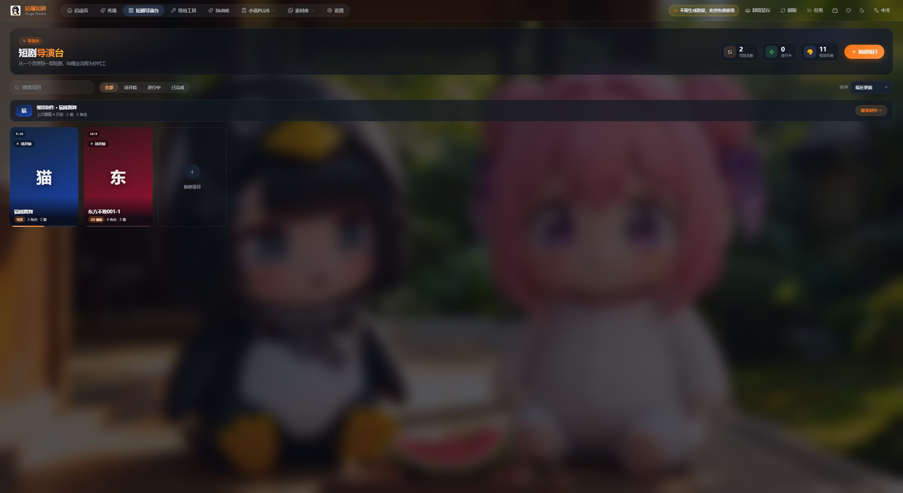
图 1 短剧导演台首页：顶部统计、搜索与筛选、项目卡片区
项目库新建项目、封面管理、搜索与状态筛选
项目详情剧集列表 + 项目素材库（角色/场景/道具）
单集工作台原文改写 → 资产制作 → 分镜视频 → 成片合成
三步上手路线
- 在 设置 → AI 服务 里配好文本 / 图片 / 视频能力（这一步没配，导演台会用不了）。
- 回到导演台 新建项目，定好名称、视觉风格与画面比例。
- 进入项目 → 添加集 → 进入单集工作台，按左侧 四步流程 从上往下走，最后下载成片。
两个必须提前知道的“锁定”规则：
- 项目创建时：画面比例一旦定下不可改，视频生成会统一用该比例。
- 单集创建时：会自动锁定当前启用的图片与视频生成能力，之后改设置不影响已建的集。
导演台首页就是你的项目货架。所有短剧项目以海报卡片排列，右上角实时显示项目总数、进行中数量与视觉风格数量。
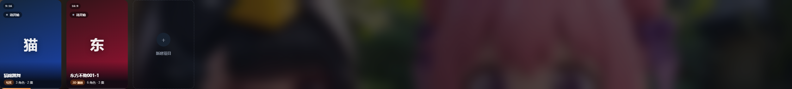
图 2 项目卡片：左上角画幅比例角标（如 9:16）、状态徽章（待开始 / 进行中 / 已完成）、底部标题与集数·角色数
工具条逐项说明
| 控件 | 作用 | 使用建议 |
|---|
| 搜索项目 | 按项目名称即时过滤 | 项目多时先搜再操作 |
| 全部 / 待开始 / 进行中 / 已完成 | 按状态筛选卡片 | 赶稿时用「进行中」定位 |
| 排序：最近更新 / 标题 | 调整卡片顺序 | 多项目并行时选「最近更新」 |
| ＋ 新建项目（右上角橙色按钮） | 弹出新建项目面板 | 见第 2 节 |
| 卡片左上角 9:16 角标 | 该项目锁定的画幅比例 | 横屏短剧选 16:9 |
| 卡片左上角状态徽章 | 待开始 / 进行中 / 已完成 | 可点它筛选对应状态 |
| 卡片右下角「设置封面」 | 给项目上传或更换封面图 | 封面用于秀场展示 |
| 末尾的 ＋ 新建项目 虚线卡 | 网格末尾的快捷创建入口 | 与右上角按钮等价 |
点右上角「＋ 新建项目」，只需三步就能把一个项目立起来。
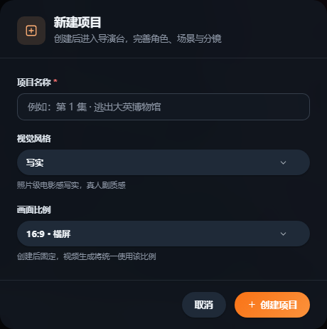
图 3 「新建项目」面板：项目名称（必填）、视觉风格、画面比例
- 项目名称 *：示例占位符是「例如：第 1 集 · 逃出大英博物馆」，建议写成「集名 + 核心事件」，方便日后检索。
- 视觉风格：下拉选择（如「写实」），提示语写着「照片级电影感写实，真人剧质感」——它决定全片的画面基调，与设置里的「视频画风」配合使用。
- 画面比例：16:9 横屏 / 9:16 竖屏 / 1:1 方形 / 自适应。下方红字提示：创建后固定，视频生成将统一使用该比例。
- 点 ＋ 创建项目，直接进入导演台项目详情页。
最容易踩的坑：比例建完不能改。短剧投放抖音 / 快手 / 视频号一律选 9:16 竖屏；横屏平台（B 站、长视频）选 16:9。先想清楚再点创建。
关掉软件后再回来，导演台会记住你上次做到哪儿。
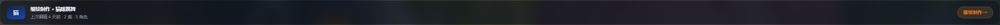
图 4 「继续制作」横幅：显示最近编辑的项目、上次编辑时间、集数与角色数
继续制作：横幅会显示「上次编辑 X 前 · N 集 · M 角色」，点右侧「继续制作 →」直接跳回那一集的工作台，是最常用的返回入口。
卡片右上角「⋯」快捷菜单
| 菜单项 | 说明 |
|---|
| 打开项目 | 进入项目详情页 |
| 设置封面 | 上传或清除项目封面 |
| 重命名 | 修改项目名称 |
| 加入系列 | 把本项目挂到某个剧集系列下（可标季） |
| 删除项目 | 危险操作，会二次确认，慎用 |
打开项目后，顶部是项目信息条，下面分「剧集列表」与「素材库」两个标签。
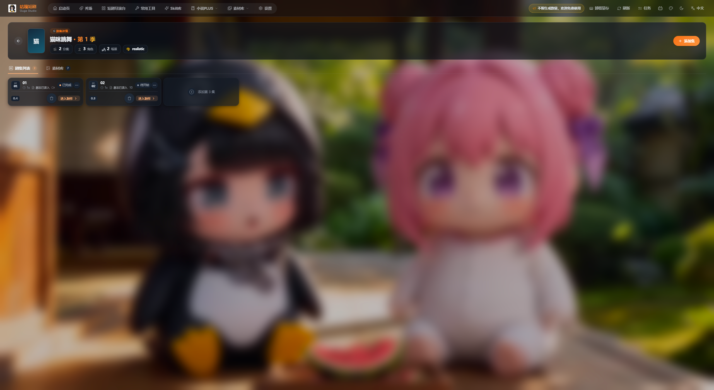
图 5 项目详情页：顶部项目信息条 + 剧集列表 + 右上「＋ 添加集」
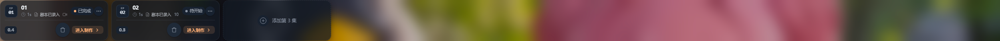
图 5-2 剧集卡片区：集号、状态、分镜进度与「进入制作 →」
顶部项目信息条
- 项目封面 + 标题 + 第 N 季：季数来自系列设置
- 集数：该项目已建了多少集
- 角色 / 场景：资产数量统计
- 风格标识：如
realistic，即建项目时选的视觉风格
- 左上角 ← 返回项目库
剧集卡片
- 集号 01 / 02 与集标题
- 进度标记：已完成 / 待开始
- 中间显示分镜数量与已录入条目数
- 右下角 进入制作 → 打开该集工作台
- 右下角图标：删除该集
- 网格末尾虚线卡：添加第 3 集
点右上角「＋ 添加集」或网格末尾的「添加第 N 集」，弹出创建新集面板。
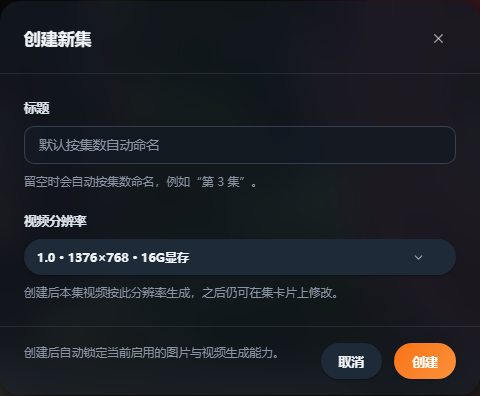
图 6 「创建新集」面板：标题（可留空）、视频分辨率
- 标题留空时自动按集数命名，例如「第 3 集」。想自己命名就手填。
- 视频分辨率下拉可选不同档位，如
1.0 · 1376×768 · 16G显存。数字越高越清晰，显存要求也越高；本地 ComfyUI 显存不足时选低一档。
- 底部提示「创建后会自动锁定当前启用的图片与视频生成能力。」——建集前先去设置页确认 AI 服务已配好。
建议：创建新集前先回「设置 → AI 服务」看一眼文本 / 图片 / 视频三类默认模型是否是你想要的（尤其是默认模型带 ⭐ 的那条）。建集后就锁定了，改设置不会影响已建的集。
「素材库」标签里，项目级的角色、场景、道具统一管理，是全片一致性的关键。
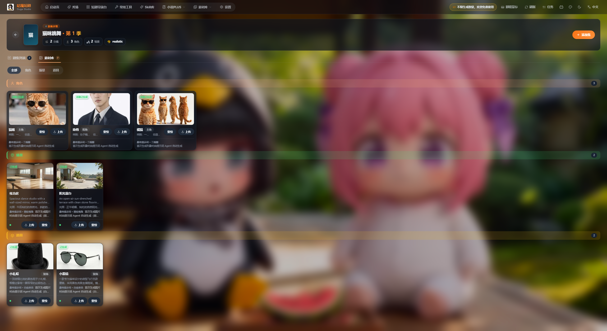
图 7 项目素材库：按「角色 / 场景 / 道具」分组，每张卡片带标签与「上传 / 重绘」按钮
每个素材卡片上的信息与操作
| 元素 | 说明 |
|---|
| 绿色 已生成 角标 | 该资产已有可用图片 |
| 名称 + 定位标签 | 如「猫咪 · 主角」「练功房 · 午后 · 室内」「小礼帽 · 装饰」 |
| 英文描述 | Agent 提取的外观提示词（画风、色彩、光线…），决定重绘时的效果 |
| 上传 | 用你自己的图替换 Agent 生成图 |
| 重绘 | 按当前图片模型重新生成一张 |
| 分组标题右侧数字 | 该组资产数量 |
用法：角色图、场景图、道具图会被系统自动带入分镜的「参考素材」，保证同一角色在每个镜头里长得一样。角色定妆后建议上传一张你满意的定妆照，后续镜头都会以它为参考。
点剧集卡片的「进入制作 →」，进入单集工作台。左边是四步流水线，右上角是全局参数。
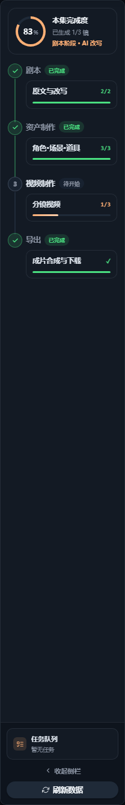
图 8 左侧步骤栏：完成度圆环 + 剧本 / 资产制作 / 视频制作 / 导出 四步
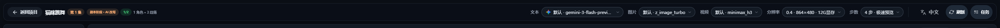
图 9 顶部参数条：文本 / 图片 / 视频模型、分辨率、步数与预览模式
顶部参数逐项说明
| 参数 | 示例值 | 说明 |
|---|
| 文本 | 默认 · gemini-3-flash-preview | 剧本改写、分镜拆解用的文本模型，来自设置页文本服务 |
| 图片 | 默认 · z_image_turbo | 角色图 / 场景图 / 分镜图模型 |
| 视频 | 默认 · minimax_h3 | 镜头视频生成模型 |
| 分辨率 | 0.4 · 864×480 · 12G显存 | 数值越大越清晰、显存占用越高 |
| 步数 | 4 步 · 极速预览 | 4 步出草稿快；改高步数画质更好但更慢 |
三步必须按顺序来：剧本 → 资产制作 → 视频制作 → 导出。每一步完成后，左侧对应条目会亮起绿色对勾并显示「已完成」，未做的步骤显示「待开始」。
把小说/大纲原文变成可拍的短剧剧本。左侧显示「原文与改写 2/2」进度。
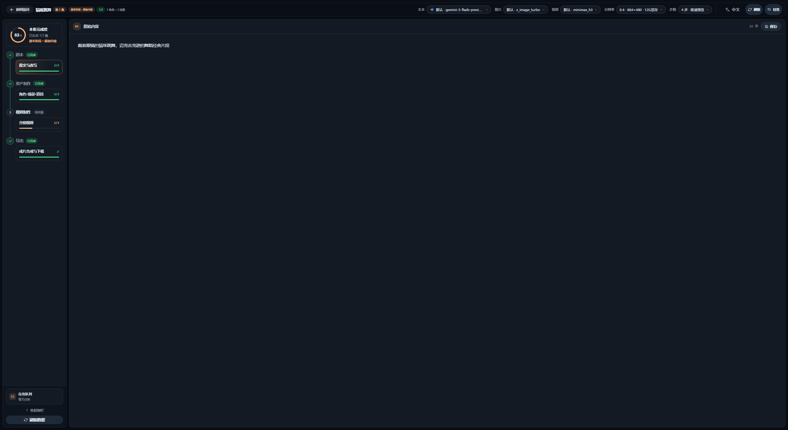
图 10 原文与改写：右侧为 AI 改写稿，左上角显示字数，可「跳过改写」或「重新改写」
- 把小说原文粘贴进 原文 区（或由小说PLUS 导入）。
- 点 改写，AI 按短剧节奏重写：压缩叙事、强化冲突、保留钩子。
- 结果不满意点 重新改写；想保留自己的原文，点 跳过改写 直接进入下一步。
- 右上角可切换使用的文本模型，不同模型风格差异明显。
AI 从剧本里抽出角色、场景、道具，并自动生成参考图（图中显示 3/3 已完成）。
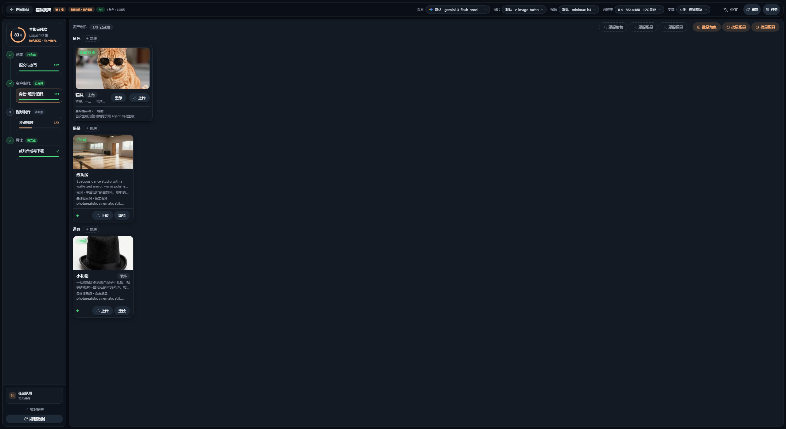
图 11 资产制作：顶部「重绘角色 / 重绘场景 / 重绘道具 / 批量角色 / 批量场景 / 批量道具」一键批量生成
- 点 重绘角色 / 重绘场景 / 重绘道具（或对应的批量按钮）生成参考图。
- 每张卡片不满意就点 重绘，或用 上传 换成自己的定妆照。
- 右上角可切到场景、道具分组分别处理。
- 全部确认后，这一步自动打勾，进入分镜环节。
提效：角色脸是全片一致性的关键。生成后先给主要角色手动上传一张定妆照，再点分镜步骤，比反复重绘省时间得多。
整部短剧的核心环节：拆镜 → 写分镜 → 选参考素材 → 生成镜头视频。
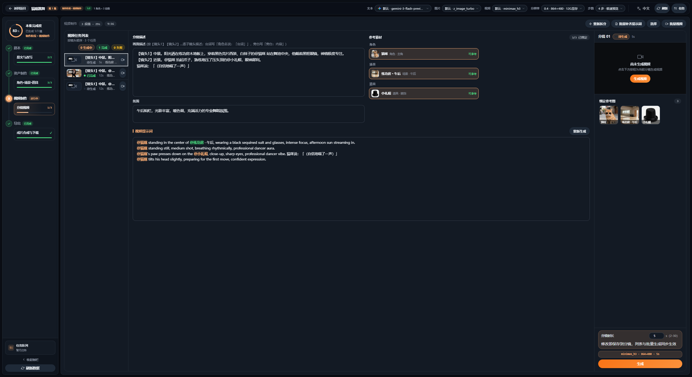
图 12 分镜视频工作区：左列分镜任务列表、中列分镜描述与视觉提示词、右列参考素材与生成按钮
五个区域怎么用
| 区域 | 内容 | 操作要点 |
|---|
| 分镜任务列表（最左） | 每一镜的缩略图、状态（生成中 / 已完成 / 失败）、耗时 | 点某镜切到右侧编辑 |
| 分镜描述 | 画面描述 + 台词 + 运镜（特写/中景/近景/远景/室内等） | AI 生成后可手动改字 |
| 氛围 | 光线、色彩、情绪基调 | 决定成片调性 |
| 视觉提示词 | 英文 prompt，每行一个 @ 角色/@场景/@道具 引用 | 点「重新生成」可换一版 |
| 参考素材 | 这一镜要用的角色 / 场景 / 道具缩略图 | 点缩略图即可增删引用 |
- 点右上 重新拆分 可让 AI 重新拆镜；批量补提示词 一次性为所有分镜补齐 prompt。
- 在右侧检查视觉提示词，必要时手改或点「重新生成」。
- 右下角设置 分镜时长（秒），并会显示该镜使用的模型与分辨率。
- 点橙色 生成，镜头视频进入左侧任务队列；失败可单独重试，不影响其它镜头。
显存与步数：顶部的「分辨率」与「步数」直接决定速度与画质。草稿阶段用低分辨率 + 4 步极速预览，确认镜头没问题后再切高画质重生成，是最省时间的做法。
所有镜头就位后，在这里挑片、合成、下载成片。
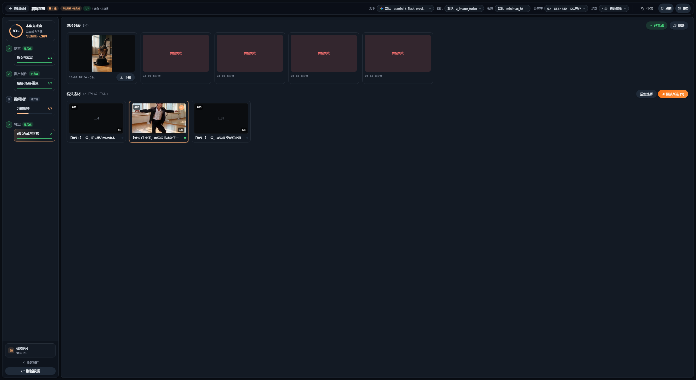
图 13 成片合成：上方「成片列表」可下载单个镜头，下方「镜头条目」可勾选后「拼接所选」
- 成片列表：每个已完成镜头的成片缩略图，下方显示时长；点「下载」单独拿走这一镜。
- 镜头条目：一镜一条，显示镜头号、描述与时长；左侧勾选框决定是否参与拼接。
- 点 清空选择 重置勾选，点橙色 拼接所选 (N) 把勾选的镜头合成一条视频。
- 顶部绿色 ✓ 已完成 表示本集流程全部完成；右上「刷新」可同步最新任务状态。
看到「拼接失败」怎么办？通常是被选中的镜头里有失败的空镜（成片列表中显示为红色「拼接失败」的占位）。回到步骤 3 把该镜重新生成成功，再回到这里重新拼接。
常见问题
| 现象 | 原因与处理 |
|---|
| 生成一直失败 / 提示显存不足 | 顶部把分辨率降一档（如 0.4 · 864×480），步数保持 4；本地 ComfyUI 建议 8G 以上显存，11G 以上更稳 |
| 画面比例不对 | 比例在建项目时已固定，改不了，只能新建项目 |
| 换模型后成片没变化 | 该集在建集时已锁定图片/视频能力，需新建一集才会用上新模型 |
| 角色每个镜头长得不一样 | 在素材库给主角上传定妆照，并确保分镜的「参考素材」里勾选了该角色 |
| 成片拼接失败 | 有镜头生成失败，先回步骤 3 重生成该镜 |
| 页面卡住、状态不同步 | 左下角点「刷新数据」，任务面板里也可查看排队任务 |
提效技巧
- 草稿用低分辨率，交付再提清晰度：先 4 步极速预览跑通全片，确认节奏后再切高画质重生成镜头。
- 批量按钮优先：「批量角色 / 批量场景 / 批量道具」「批量补提示词」能省掉大量重复点击。
- 用「继续制作」回到现场：关掉软件也不怕，横幅直达上次那一集。
- 左侧步骤栏当进度看板：绿勾 = 已完成，数字 = 进度（如 3/3、1/3），一眼看出卡在哪。
- 模型随时可切：顶部「文本 / 图片 / 视频」下拉即时生效，无需回设置页。
照着勾一遍，确认这一集可以交付。
- 项目：名称、视觉风格、画面比例（9:16 / 16:9）已按投放平台选定。
- 项目封面已上传，秀场展示正常。
- 设置 → AI 服务中，文本 / 图片 / 视频三类默认模型（带 ⭐）已确认。
- 步骤 1：原文改写稿已定稿，或已确认跳过改写。
- 步骤 2：主要角色已上传定妆照；场景、道具参考图齐全（3/3）。
- 步骤 3：分镜数量与剧本节奏匹配；每个分镜的描述、氛围、视觉提示词都核对过。
- 步骤 3：所有镜头状态为「已完成」，没有红色「拼接失败」占位。
- 步骤 3：分镜时长设置合理，单镜 3–8 秒为主。
- 步骤 4：勾选需要合成的镜头，点「拼接所选」，成片成功生成。
- 成片已下载到本地，文件可正常播放。
- 项目状态更新为「已完成」，方便下次在项目库里筛选。
下一站：成片可以到顶部导航的 秀场 展示，或在 常用工具 / Skill 库 里做二次加工；多集项目可在「素材库 → 系列」里归到同一季统一管理。